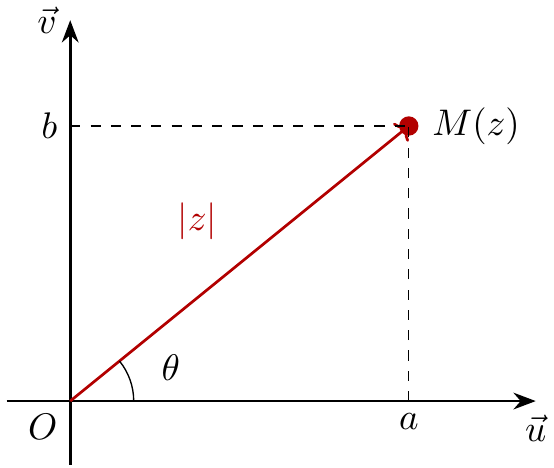
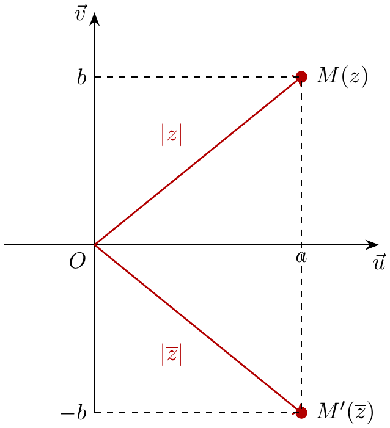
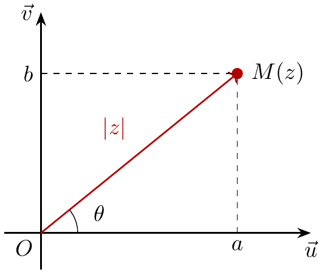
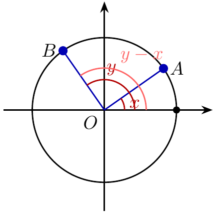

Chapitre 1 : Nombres complexes {\large Le point de vue algébrique}
Maths expertes · Chapitre 1 — Nombres complexes (algébrique) · cours de Frederik de Peyrelongue
\newpage
I. Histoire
Un problème historique
À la fin du XVIe siècle, les mathématiciens cherchent une résolution générale des équations du troisième degré. À l'aide d'un changement de variable, bien choisi, toute équation du troisième degré peut se mettre sous la forme
Soit la fonction $f$ définie sur $\R$ par $f(x)=x^{3}+px+q$.
$f$ est continue sur $\R$ et $\lim\limits_{+\infty}f=+\infty$ et $\lim\limits_{-\infty}f=-\infty$ ; d'après le théorème des valeurs intermédiaires, l'équation $f(x)=0$ admet au moins une solution.
La formule de Cardan donne l'expression de cette solution :
\[ x_{0}=\sqrt[3]{-\frac{q}{2}-\sqrt{\left(\frac{q}{2}\right)^{2} +\left(\frac{p}{3}\right)^{3}}} +\sqrt[3]{-\frac{q}{2}+\sqrt{\left(\frac{q}{2}\right)^{2} +\left(\frac{p}{3}\right)^{3}}} . \]Bombelli, autre mathématicien de l'époque, applique cette formule à l'équation
\[ x^{3}-15x-4=0\quad\text{avec } p=-15 \text{ et } q=-4 . \]
Il obtient alors :
On a une racine avec des réels négatifs : l'algorithme de Cardan ne marche pas !
Mais Bombelli décide de poursuivre le calcul avec le nombre $\sqrt{-1}$, en posant pour principe que $\sqrt{-1}^{2}=-1$. C'est un génie du calcul, et il a l'idée de trouver les cubes égaux à $2-11\sqrt{-1}$ et à $2+11\sqrt{-1}$.
Il utilise ses cubes dans la formule et obtient
On peut vérifier aisément que $4$ est bien solution. Donc l'algorithme de Cardan, en utilisant un nombre interdit, fonctionne.
$\sqrt{-1}$ sera utilisé pendant longtemps comme « astuce » de calcul. Descartes le baptisera « nombre imaginaire ». Et Euler introduira la notation $i=\sqrt{-1}$.
Gauss donnera une représentation à ses nombres imaginaires, et c'est ainsi que prendra forme l'ensemble des nombres complexes au XIXe siècle.
II. Construction des nombres complexes
Définition
On appelle $\C$ l'ensemble des nombres complexes.
Un nombre complexe $z$ est un nombre s'écrivant sous la forme :
Le nombre réel $a$ s'appelle la partie réelle de $z$, notée $\Re(z)$. Le nombre réel $b$ s'appelle la partie imaginaire de $z$, notée $\Im(z)$.
La forme $z=a+ib$ est appelée forme algébrique.
Remarque :
- Si $b=0$, $z$ est réel, donc $\R\subset\C$.
- Si $a=0$, $z$ est un imaginaire pur. L'ensemble des imaginaires purs est noté $i\R$.
La forme algébrique est unique. Raisonnons par l'absurde : supposons que $z$ ait deux écritures $a+ib$ et $a'+ib'$ avec $(a,b)\neq(a',b')$.
\[\begin{aligned} a+ib=a'+ib' &\iff a-a'=i(b'-b)\\ &\iff (a-a')^{2}=i^{2}(b'-b)^{2} \iff (a-a')^{2}=-(b'-b)^{2}\\ &\iff a-a'=0 \text{ et } b'-b=0 \iff a=a' \text{ et } b'=b . \end{aligned}\]On arrive à une contradiction : l'hypothèse de départ est fausse et l'écriture est unique.
Opérations avec les nombres complexes
On définit deux opérations dans l'ensemble $\C$.
Soit $z=a+ib\in\C$ et $z'=a'+ib'\in\C$.
L'addition par :
La multiplication par :
- L'addition dans $\C$ possède les propriétés de commutativité et d'associativité, un élément neutre $0$ et, pour chaque nombre complexe $z$, un élément symétrique, l'opposé $-z$.
- La multiplication dans $\C$ possède les propriétés de commutativité et d'associativité, un élément neutre $1$ et, pour chaque nombre complexe $z$ non nul, un élément symétrique, l'inverse $\dfrac{1}{z}$.
- La multiplication dans $\C$ est distributive par rapport à l'addition.
L'intégrité (produit nul) : $\forall z,z'\in\C$,
\[ zz'=0\iff z=0 \text{ ou } z'=0 . \]
Ces différentes propriétés donnent à $\C$ une structure de corps commutatif $(\C,+,\times)$ comme $(\R,+,\times)$.
Soient $z_{1}=1+i$, $z_{2}=\sqrt{3}+i$, $z_{3}=-5+2i$.
- Calculer $z_{1}+z_{2}$ ; $z_{1}+z_{3}$ ; $z_{2}-z_{3}$.
- Calculer $z_{1}z_{2}$ ; $z_{1}z_{3}$ ; $z_{2}z_{3}$.
Comparaison de deux complexes : il est possible de définir une relation d'ordre dans $\C$, prolongement de la relation d'ordre dans $\R$.
On compare les parties réelles et, en cas d'égalité, les parties imaginaires.
En notant $\preccurlyeq$ cette relation
D'où $3+5i\preccurlyeq4-2i$ et aussi $-5+2i\preccurlyeq-5+3i$.
Cependant, cette relation n'est pas « performante », car elle n'est pas compatible avec la multiplication : d'après cette relation $0\preccurlyeq i$ et, en multipliant par $i$, on a $0\preccurlyeq-1$, qui est faux. On abandonne donc l'idée de comparaison et d'inéquation dans $\C$ !
Conjugué
Soit $z=a+ib\in\C$ : on appelle le nombre conjugué de $z$, noté $\overline{z}$, le nombre $a-ib$.
$z=3-5i$ alors $\overline{z}=3+5i$.
$\forall z\in\C$, $z\,\overline{z}=a^{2}+b^{2}$.
Applications du conjugué.
Trouver la forme algébrique du complexe $z=\dfrac{2-5i}{3+2i}$.
Comme pour les calculs avec des radicaux, on multiplie en haut et en bas par le conjugué du dénominateur :
Résoudre l'équation suivante : $z=(2+3i)z+5-3i$.
Calcul de l'inverse $z=2-3i$.
Cas général : $z=a+ib$. Montrer que $\dfrac{1}{z}=\dfrac{\overline{z}}{a^{2}+b^{2}}$.
Opérations et propriétés du conjugué
Soit $z\in\C$ et $z'\in\C^{*}$, alors
Remarque. Le conjugué de la somme, du produit et du quotient est égal à la somme, au produit et au quotient des conjugués. Les opérations avec le conjugué ne posent aucun problème.
part le terme de gauche et le terme de droite, en posant $z=a+ib$ et $z'=a'+ib'$.
1) $\overline{\overline{z}}=\overline{(a+ib)}=\overline{(a-ib)}=a+ib=z$.
2)
3)
D'où $\overline{zz'}=\overline{z}\,\overline{z'}$.
4)
d'où $\overline{\left(\dfrac{1}{z}\right)}=\dfrac{1}{\overline{z}}$.
5) 3 et 4 impliquent
6) Démontrons par récurrence que, pour tout $n\in\N$, $\overline{z^{n}}=\overline{z}^{n}$.
Soit $H_{k}$ la proposition : pour $k\in\N$, $\overline{z^{k}}=\overline{z}^{k}$.
Initialisation : pour $k=0$, $z^{0}=1$, d'où $\overline{z^{0}}=\overline{1}=1$ et $\overline{z}^{0}=1$, d'où $\overline{z^{0}}=\overline{z}^{0}$ : $H_{0}$ est vraie.
Hérédité : on suppose que, pour $k\in\N$, $\overline{z^{k}}=\overline{z}^{k}$. Montrons que $H_{k}$ vraie entraîne $H_{k+1}$ vraie :
donc $H_{k}$ vraie $\Longrightarrow$ $H_{k+1}$ vraie.
Conclusion : $\forall n\in\N$, $H_{n}$ est vraie, pour tout $n\in\N$, $\overline{z^{n}}=\overline{z}^{n}$.
Donner la forme algébrique du conjugué de $z=\dfrac{5+3i}{2-3i}$.
Soit $z\in\C$, alors
- $z+\overline{z}=2\,\Re(z)$ ;
- $z-\overline{z}=2i\,\Im(z)$ ;
- $z\in\R\iff z=\overline{z}$ ;
- $z$ est imaginaire pur $\iff z+\overline{z}=0$.
1) $z+\overline{z}=a+ib+a-ib=2a=2\Re(z)$.
2) $z-\overline{z}=a+ib-(a-ib)=2ib=2i\,\Im(z)$.
3) $z=\overline{z}\iff z-\overline{z}=0\iff 2i\,\Im(z)=0 \iff \Im(z)=0\iff z\in\R$.
4) $z+\overline{z}=0\iff 2\Re(z)=0\iff z$ est imaginaire pur.
Représentation des nombres complexes
Soit le repère orthonormé $(O,\vec{u},\vec{v})$, appelé plan complexe. À tout nombre complexe $z=a+ib$, on peut associer un unique point $M(a\,;b)$ dans le repère $(O,\vec{u},\vec{v})$. On dit que $z$ est l'affixe de $M$ et on écrit alors $M(z)$.

Remarque : réciproquement, à tout point $M(a\,;b)$ du plan complexe, on peut associer un unique complexe $z=a+ib$. Cette application est bijective.
Conséquence. On peut représenter tout nombre complexe $z=a+ib$.
- L'axe des abscisses est appelé « axe des réels ».
- L'axe des ordonnées est appelé « axe des imaginaires purs ».
Interprétation géométrique du conjugué : $M'(\overline{z})$ est le symétrique de $M(z)$ par rapport à l'axe des réels.

Module
Soit $z$ un nombre complexe d'écriture algébrique $a+ib$.
Le module de $z$, noté $|z|$, est le nombre
Interprétation géométrique : le module de $z$ correspond à la distance $OM$ :
- $|-z|=|z|$ ;
- $|z|=|\overline{z}|$ ;
- $z\,\overline{z}=|z|^{2}$ ;
- $\dfrac{1}{z}=\dfrac{\overline{z}}{|z|^{2}}$ pour $z\neq 0$.
- 1) $|-z|=\sqrt{(-x)^{2}+(-y)^{2}}=\sqrt{x^{2}+y^{2}}=|z|$.
- 2) $|\overline{z}|=\sqrt{x^{2}+(-y)^{2}}=\sqrt{x^{2}+y^{2}}=|z|$.
- 3) $z\,\overline{z}=(x+iy)(x-iy)=x^{2}+y^{2}=|z|^{2}$.
Pour tous complexes $z$ et $z'$ :
- $|zz'|=|z|\,|z'|$ ;
- $|z^{n}|=|z|^{n}$ ;
- $\left|\dfrac{1}{z}\right|=\dfrac{1}{|z|}$ pour $z\neq 0$ ;
- $\left|\dfrac{z}{z'}\right|=\dfrac{|z|}{|z'|}$ pour $z'\neq 0$.
Argument
Soit $z$ un nombre complexe non nul, de point image $M$ dans le plan complexe $(O,\vec{u},\vec{v})$. L'argument de $z$, noté $\arg(z)$, correspond à l'angle orienté $\left(\vec{u}\,;\overrightarrow{OM}\right)$.
Remarque : un nombre complexe non nul a une infinité d'arguments modulo $[2\pi]$.
Pour tout nombre complexe non nul $z$ :
- $\arg(-z)=\arg(z)+\pi$ \ $[2\pi]$ et $\arg(\overline{z})=-\arg(z)$ \ $[2\pi]$ ;
- $z$ est un nombre réel si, et seulement si, $\arg(z)=0$ \ $[2\pi]$ ou $\pi$ \ $[2\pi]$ ;
- $z$ est imaginaire pur si, et seulement si, $\arg(z)=\dfrac{\pi}{2}$ \ $[2\pi]$ ou $-\dfrac{\pi}{2}$ \ $[2\pi]$.
Représentation graphique en utilisant le module et l'argument
On peut aussi repérer le point $M$ par :
- la distance $OM$ : le module de $z$, noté $|z|$ ;
- l'angle $\left(\vec{u}\,;\overrightarrow{OM}\right)$ $[2\pi]$ : l'argument de $z$, noté $\arg(z)$.
On a $|z|=\sqrt{a^{2}+b^{2}}$ (Pythagore) et, pour $z\neq 0$,
\[ \begin{cases} \sin(\theta)=\dfrac{b}{|z|}\\[6pt] \cos(\theta)=\dfrac{a}{|z|} \end{cases} \quad\text{avec } \theta=\arg(z)\ [2\pi] . \]
Représenter puis déterminer le module et un argument des nombres complexes suivants : $z_{1}=1+i$, $z_{2}=\sqrt{3}+i$, $z_{3}=-5+2i$.
On a les représentations de $z_{1}$, $z_{2}$ et $z_{3}$ suivantes :
$OM_{1}=\sqrt{1^{2}+1^{2}}=\sqrt{2}$ et
$OM_{2}=\sqrt{\sqrt{3}^{2}+1^{2}}=2$ et
Forme trigonométrique
Tout nombre complexe non nul $z$ s'écrit sous la forme suivante :
Cette forme est appelée forme trigonométrique du complexe $z$.
Remarque : le couple $(\rho\,;\theta)$ est appelé coordonnée polaire du point $M$ d'affixe $z$.

Lien entre forme algébrique et forme trigonométrique :
avec
D'où
III. Forme exponentielle
Introduction
La fonction exponentielle est la seule fonction continue sur $\R$ qui transforme une somme en produit et qui prend la valeur $e$ en $1$.
Soit $f$ la fonction définie sur $\R$ à valeurs complexes par
- $f(0)=\cos(0)+i\sin(0)=1+0=1$.
- $\forall x\in\R$, $|f(x)|=\sqrt{\cos^{2}(x)+\sin^{2}(x)}=\sqrt{1}=1$.
Montrons que $f(x)f(x')=f(x+x')$ :
Donc $f$ vérifie la même propriété que l'exponentielle réelle, d'où l'idée de définir une exponentielle complexe.
Pour tout $x$ réel, on note
$\e^{ix}$ se lit « exponentielle de $ix$ ».
Pour tous $x$, $y$ réels et pour tout $n$ entier :
- $\e^{ix}\times \e^{iy}=\e^{i(x+y)}$ ;
- $\dfrac{\e^{ix}}{\e^{iy}}=\e^{i(x-y)}$ ;
- $\left(\e^{ix}\right)^{n}=\e^{inx}$.
Définition
La forme exponentielle d'un nombre complexe non nul est
Soit $z=1+i\sqrt{3}$ : on a $|z|=2$ et $\arg(z)=\dfrac{\pi}{3}$, donc
Formule de Moivre et formule d'Euler
Soit $\theta\in\R$ et $n\in\N$ ; on a alors :
Formule de Moivre :
\[ \cos(n\theta)+i\sin(n\theta)=\e^{in\theta} =\bigl(\cos\theta+i\sin\theta\bigr)^{n} ; \]Formules d'Euler :
\[ \cos\theta=\frac{\e^{i\theta}+\e^{-i\theta}}{2} \qquad\text{et}\qquad \sin\theta=\frac{\e^{i\theta}-\e^{-i\theta}}{2i} . \]
l'exponentielle.
Formule d'Euler :
IV. Formule du binôme
Exemple
$(a+b)^{0}=1\\ (a+b)^{1}=a+b\\ (a+b)^{2}=a^{2}+ab+ba+b^{2}=a^{2}+2ab+b^{2}\\ (a+b)^{3}=a^{3}+a^{2}b+aba+ba^{2}+ab^{2}+bab+b^{2}a+b^{3} =a^{3}+3a^{2}b+3ab^{2}+b^{3}$
Triangle de Pascal
Le triangle de Pascal est une présentation des coefficients binomiaux dans un triangle. Il fut nommé ainsi en l'honneur du mathématicien français Blaise Pascal. Il est connu sous l'appellation « triangle de Pascal » en Occident.
Pour passer d'une ligne à la suivante, le premier élément de la ligne et le dernier sont toujours des $1$, et les éléments suivants sont la somme des deux éléments de la ligne antérieure en partant de la gauche.
Les coefficients sont appelés coefficients binomiaux et sont notés $\dbinom{n}{k}$, $n$ la ligne et $k$ la colonne.
| $n\backslash k$ | $0$ | $1$ | $2$ | $3$ | $4$ | $5$ | $\dots$ |
| $0$ | $1$ | ||||||
| $1$ | $1$ | $1$ | |||||
| $2$ | $1$ | $2$ | $1$ | ||||
| $3$ | $1$ | $3$ | $3$ | $1$ | |||
| $4$ | $1$ | $4$ | $6$ | $4$ | $1$ | ||
| $5$ | $1$ | $5$ | $10$ | $10$ | $5$ | $1$ | |
| $6$ | $1$ | $6$ | $15$ | $20$ | $15$ | $6$ | $1$ |
À la ligne $5$, on obtient les coefficients de $(a+b)^{5}$ :
Pour $n,k\in\N$ et pour $0\leqslant k\leqslant n$,
Pour $n,k\in\N^{*}$ et pour $1\leqslant k\leqslant n-1$,
obtient le résultat souhaité. Il existe une preuve plus élégante qui fait appel au dénombrement.
Formule du binôme
Pour tout $n\in\N$ et pour tout $z,t\in\C$,
avec
les coefficients binomiaux (ou coefficients de Pascal).
Montrons la propriété $P(n)$ : pour tout $n\in\N$ et pour tout $z,t\in\C$,
Initialisation : $(z+t)^{0}=\dbinom{0}{0}z^{0}t^{0}=1$ : $P(O)$ est vérifiée.
Hérédité : Soit $k\in\N$. On suppose la proposition $P(k)$ vraie ; montrons la propriété au rang $k+1$.
Nous allons modifier l'écriture de la première somme $\displaystyle\sum_{p=0}^{k}\binom{k}{p}z^{p+1}t^{k-p}$ :
Le $(p+1)$ va varier de $1$ à $k+1$ ; je remplace $p$ par $p-1$ et je modifie le domaine de variation du nouveau $p$, qui commencera à $1$ et ira jusqu'à $k+1$ :
Je remplace dans la formule du haut :
Pour $p$ allant de $1$ à $k$, nous avons les mêmes termes dans les deux sommes, je peux les regrouper. De plus, on remarque que
On applique la relation de Pascal :
On peut alors tout regrouper sous la même somme :
D'où l'hérédité : $P(k)$ vraie entraîne que $P(k+1)$ est vraie.
Conclusion : de l'initialisation et de l'hérédité, par le principe de récurrence, $\forall n\in\N$, $P(n)$ est vraie.
V. Annexe : formule trigonométrique
que
on a donc
Les coordonnées de $A\bigl(\cos(x)\,;\sin(x)\bigr)$ et les coordonnées de $B\bigl(\cos(y)\,;\sin(y)\bigr)$, d'où
on va calculer le produit scalaire $\overrightarrow{OA}\cdot\overrightarrow{OB}$ par deux méthodes.
- $\overrightarrow{OA}\cdot\overrightarrow{OB} =OA\times OB\times\cos(y-x)=\cos(y-x)=\cos(x-y)$ (car $\cos$ est paire).
- $\overrightarrow{OA}\cdot\overrightarrow{OB} =\cos(x)\cos(y)+\sin(x)\sin(y)$.
D'où

Corollaire :
- $\cos(x+y)=\cos(x)\cos(y)-\sin(x)\sin(y)$
- $\sin(x+y)=\sin(x)\cos(y)+\cos(x)\sin(y)$
- $\sin(x-y)=\sin(x)\cos(y)-\cos(x)\sin(y)$
Preuve :
1.
2.
3.